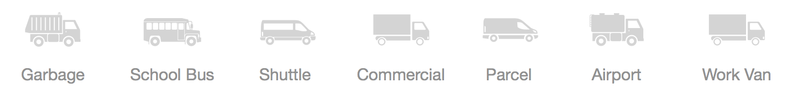
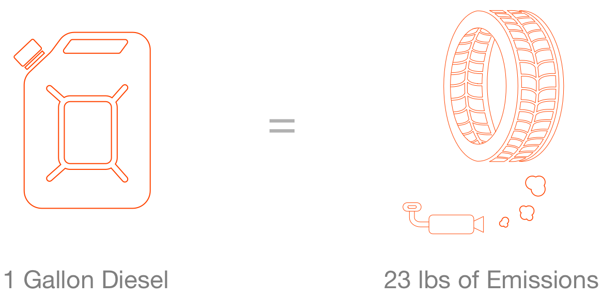

Medium Duty Electric Vehicles are a niche within the transportation sector that possess potential to create monumental impact within our urban environments.
These vehicles are an integral part of our daily lives.
Constantly running all day, MDEVs release approximately 23 lbs of [carbon/pollution] emissions - the weight of a car tire - for every one gallon of fuel used.

The result of 100,000s of gallons of fuel times 100,000s of vehicles per city
is endless polution.
This continual workload means that for every diesel truck that is replaced with
electric, the impact is equivalent to removing 7.2 gas-fueled cars.
Electrification of these fleets translates into huge environmental and fiscal
savings.
Nohm is here to change energy for commercial transportation to help businesses
and cities build cleaner environments and healthier communities.